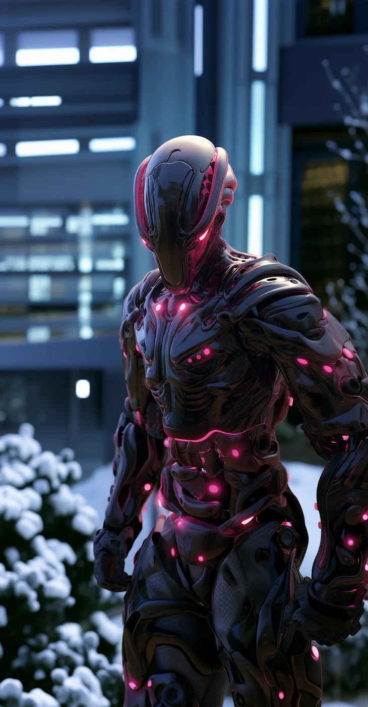
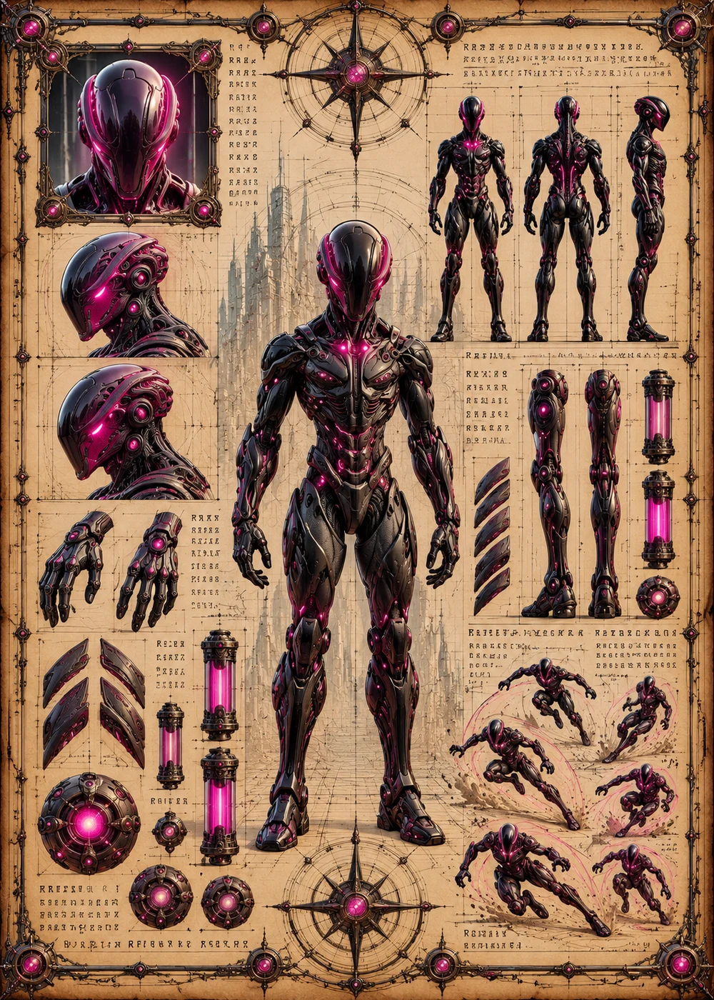

©
©
GENEZYS ARCHIVE · Earth 2 · Synthbot
Sorano
Wither Mender

Archive record
Sorano scans a battlefield for whatever life remains, and takes it. The Search Beam returns a fallen ally to the fight and burns an enemy in the same motion. Every lost connection weakens the Nexus, so Sorano never lets one go without a fight.
Combat signature
Search Beam
120 Cosmara
330 Animus
290 Vitalis
Scans and siphons life essence: Revives 1 ally with all Vitalis, but no shield and 1 CD. Deals 160 damage to 1 enemy.
Genezys 08:08 ™&©2026LEGIONS
